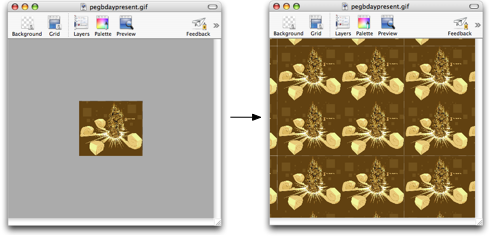

Using the tile view
If you're working on tiles for a game, you have to be sure that it looks good when it's repeated over and over again. Pixen's tile view allows you to see how it will look tiled.

While tiling mode is on, you can draw on any one of the images and it will be reflected on all of them. Additionally, you can draw across the bounds of the images, and Pixen will translate the drawing correctly. Your editing abilities are in no way inhibited with the mode enabled.
To enable the tiled view:
Use the View > Show Tiled View (⌘T).